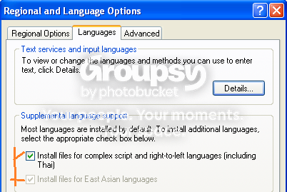
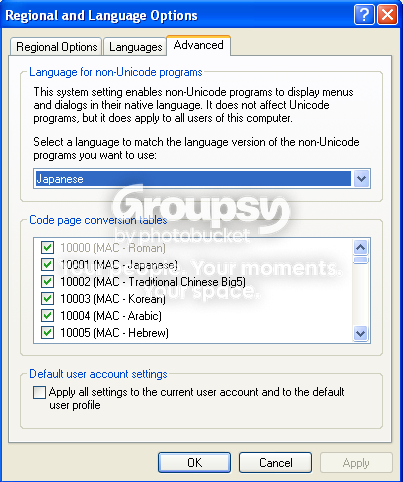
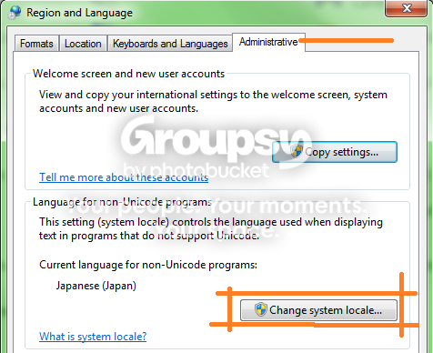
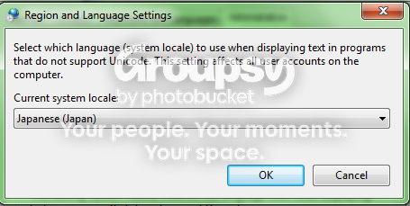
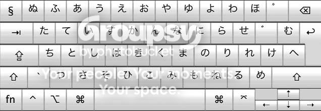
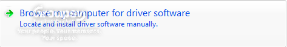
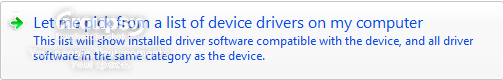

เคยไหม? ที่นั่งเล่นๆอยู่ดีๆเข้าเว็บเจอภาษาต่างดาวกล่องเหลี่ยมๆ
เคยไหม? ที่เปิดโปรแกรมแล้วเป็นภาษาต่างดาว อ่านไม่ออก
นั่นก็เพราะว่าเครื่องเรายังไม่ได้ลงภาษานั้นๆไว้ และยังไม่ได้อยู่ในสภาพที่จะรองรับภาษาต่างๆกับโปรแกรมนั้นๆ
ในที่นี้ หลักๆจะบอกวิธีการลงและปรับเปลี่ยน Localize ให้เครื่องรองรับภาษานั้นๆอย่างสมบูรณ์
โดยของแถมในที่นี้หลักๆคือ อ่านฟ้อนภาษานั้นๆออก, มองเห็นตัวอักษรเป็นปกติ, และใช้แป้นคีย์บอร์ดพิมพ์ภาษานั้นๆได้
สำหรับวินโดว์ XP
1. คลิกที่ปุ่ม Start
2. Control Panel
3. เลือก Regional and Language

4. ไปที่แถบ Languages แล้วเช๊คกรอกข้อความทั้งสองให้เป็นดังภาพ (ขอแค่เชคถูกทั้งสองข้อ)

5. จากนั้นไปที่แถบ Advance คลิกเลือกภาษาญี่ปุน แล้วกด OK

Note : สำหรับเครื่องที่มีการลงภาษาครั้งแรก ระบบจะถามหาแผ่นวินโดว์ XP เพื่อติดตั้งภาษาเพิ่มเติม
6. เมื่อทำการ รีสตาร์ทเครื่องเสร็จแล้ว คลิกขวาที่ปุ่ม Language Bar -> เลือก Setting -> จะพบว่าเครื่องได้ติดตั้งแป้นภาษาญี่ปุ่น รวมทั้งฟ้อนภาษาต่างๆเอาไว้ด้วย

7. จากนั้นมาที่หน้าแถบ Advanced แล้วติ๊กปุ่มให้ตรงตามภาพ เพื่อทำให้เปิดการใช้งานการสนับสนุนการพิมพ์เพิ่มเติม

8. กด おｋ เรียบร้อย =w=~
____________________________________________________________________________________________
สำหรับวินโดว์ Vista / 7
1. คลิกที่ปุ่ม Start

2. เลือก Control Panel
3. ปรับการมุมมองใหม่ตามภาพ ปกติจะอยู๋ฝั่งทางด้านขวาบน

4. คลิกที่ปุ่ม Region and Language
5. ไปที่ แถบ Administrative คลิกที่ปุ่ม Change system locale...

6. แล้วเลือกเป็นภาษาที่ต้องการ ในที่นี้คือญี่ปุ่น Japanese

7. กดปุ่มยืนยันยอมรับ แล้วจึงทำการรีสตาร์ทเครื่อง
8. คลิกขวาที่ปุ่ม Language Bar คลิกขวาเลือก Settings
หรือ เข้าไปที่ Region and Language จาก Control Panel อีกครั้ง -> แล้วเลือกที่ แถบ Keyboards and Language

โดยคลิกที่ปุ่ม Change Keyboards
9. จะพบว่าเครื่องได้ติดตั้งแป้นภาษาญี่ปุ่น รวมทั้งฟ้อนภาษาต่างๆเอาไว้เรียบร้อย
วิธีการพิมพ์ภาษาญี่ปุ่นในแบบต่างๆ และการเปลี่ยนแป้น Keyboard Layout
การพิมพ์แบบ Romanize

ขั้นต้นให้เราสวิชปรับเปลี่ยนเป็นโหมดภาษาญี่ปุ่นก่อน โดยกดปุ่มตัวหนอน ~ (หรือปุ่มอื่นๆที่ปรับไว้)
ให้เรากดปุ่ม CTRL ซ้ายค้าง แล้วเคาะปุ่ม Caplock 1 ครั้ง จากนั้นปล่อยปุ่ม CTRL จะได้ดังภาพ

ทีนี้เราก็เริ่มพิมพ์ภาษาญี่ปุ่นได้แล้ว โดยวิธีการพิมพ์จะพิมพ์เป็นตัวอักษรภาษาอังกฤษตามคำอ่านของพยัญชนะนั้นๆ
เช่นพิมพ์ว่า sa จะได้ตัวอักษร さ
และสมมุติถ้าพิมพ์ mizushou みずしょう แล้วเคาะปุ่ม Space Bar 水昌
จะทำให้สามารถเลือกคำที่จะพิมพ์ออกมาได้ ก่อนที่จะเคาะ Enter ยืนยันการพิมพ์เป็นอันเสร็จสิ้น
ตามตารางดังนี้

____________________________________________________________________________________________
การเปลี่ยนโหมดการพิมพ์
ให้เราคลิกซ้ายที่รูปตามภาพ

จากนั้นเลือกวิธีพิมพ์อักษรที่เราต้องการ Katagana , Hiragana ตามสะดวก =w=~
____________________________________________________________________________________________
แป้น Keyboard Layout (สำหรับคนพิมพ์ไม่ทันใจ หรือว่ามีลายแป้นคีย์บอร์ดตัวอักษรภาษาญี่ปุ่น)
ตัวอย่างรูปแป้นคีย์บอร์ด Layout ของภาษาญี่ปุ่น และวิธีจำลายทางตัวอักษรสำหรับคนหัดพิมพ์มือใหม่



วิธีการติดตั้งแป้นคีย์บอร์ดภาษาญี่ปุ่น
แบบคลิปวีดีโอ - Youtube http://www.youtube.com/watch?v=5DEhPdUt ... re=related
1. ให้เข้าไปที่ Device Manager
2. คลิกขวาที่คีย์บอร์ดที่เครื่องเราใช้อยู่ เลือก Properties
3. ไปที่แถบ Driver -> เลือก Update Driver...




4. จากนั้นคลิก Next -> ระบบจะยืนยันการติดตั้ง ให้เราตอบ Yes แล้วทำการรีสตาร์ทเครื่อง
5. เมื่อบูทเครื่องเสร็จ คีย์บอร์ดของเราก็จะเป็นแป้นพิมพ์ภาษาญี่ปุ่นเรียบร้อย

*Note ทิ้งท้าย การปรับ System locale , unicode program จะทำให้เวลาเราใช้โปรแกรมทั่วไปอย่าง Notepad หรือลงโปรแกรมอื่นๆ จะเป็นภาษาญี่ปุ่นทั้งสิ้น เราสามารถปรับคืนเป็นภาษาเดิมได้ (กลับเป็นไทย , อังกฤษ) ที่ Region and Language ใน Control Panel ซึ่งการปรับคืนนี้ไม่มีผลข้างเคียงแต่อย่างใด ยังพิมพ์ภาษาที่เราเลือกไว้ได้อยู่ปกติ เพราะเราได้ทำการลงภาษา + ฟ้อนที่จำเป็นต่างๆเรียบร้อยแล้ว
ขอให้สนุกกับการพิมพ์ภาษาต่างๆ โดยเฉพาะในที่นี้ภาษาญี่ปุ่น นิ

ขอขอบพระคุณทุกท่านที่อ่านกันนิ